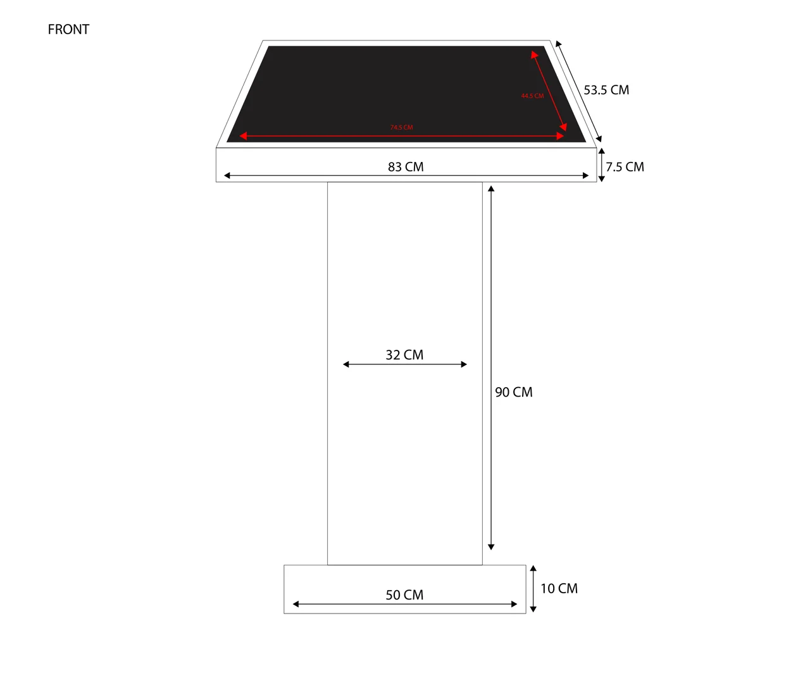

Sloped screen top
The page labels the display opening at 74.5 cm by 44.5 cm, the support at 90 cm and the base at 50 cm; these are transcribed drawing labels rather than independently verified dimensions.
Proportion explained through a production drawing.
Explore the story
Make the relationship between screen, support and base legible at a glance.
A sloped display top sits on a narrow vertical column and broader foot. Red measurement arrows distinguish the screen from black structural annotations.
The page labels the display opening at 74.5 cm by 44.5 cm, the support at 90 cm and the base at 50 cm; these are transcribed drawing labels rather than independently verified dimensions.
Red arrows distinguish the screen measurements from the surrounding black structural annotations.
The page makes the intended proportions legible, while the project context, drawing author and constructed outcome remain open questions.
Explore the complete compositions and interface states. Select any image for a closer look.
Structure, interaction and visual decisions that give the work its character.
RoleConfirm whether you designed the podium, documented supplied dimensions, or revised a collaborator's construction drawing.
AssetsCredit any supplied engineering specification, fabrication design and collaborator artwork. No original 3D modeling is inferred from this two-dimensional drawing.
StatusDraft drawing study. Native document preview reviewed; fabrication, technical approval and project boundary unverified.